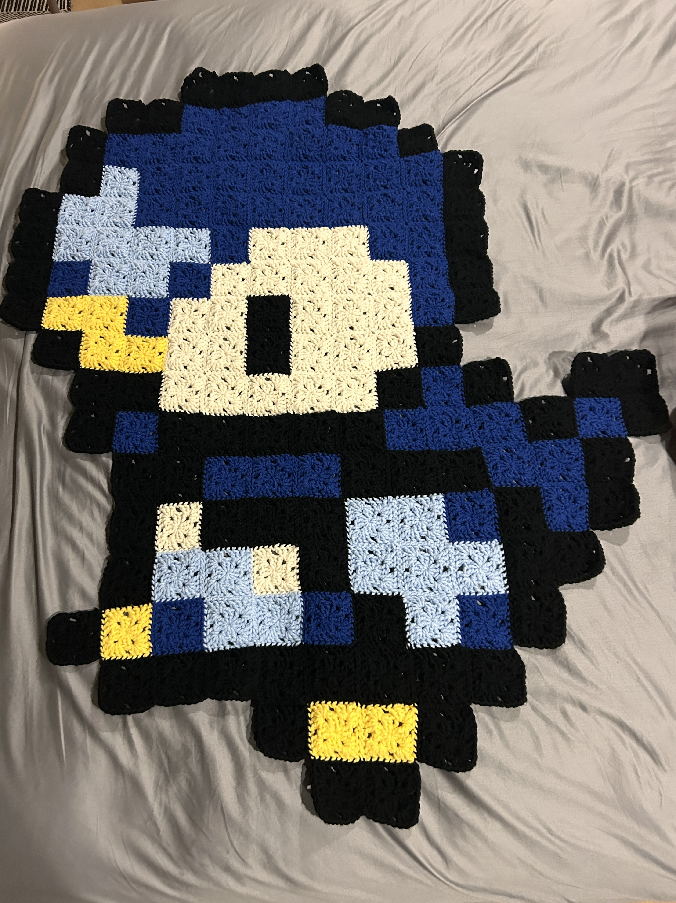
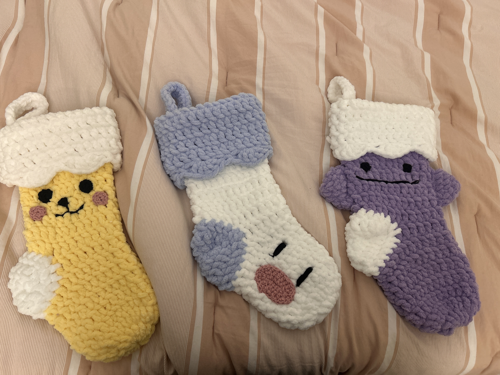

Overview
Hi! My name is Rachel and this is a very small sample of some of the crochet projects that I've made over the past few years! I picked up fiber arts around when the COVID-19 pandemic started to pass the time at home when we weren't allowd to go outside and the boredom helped me make all types of things, from hats to stuffed animals to tapestries!
Looking back, I theres a pretty clear theme in the type of crochet projects I've made (Pokemon). While I've basically only included my Pokemon projects, please trust that there are so many other types of crochet I've made! I hope you like reading about all of the things I've made so far, and I hope to be able to make a lot more projects like this in the future!
Pokemon Tapestry
This is a tapestry I made over this past summer (2024) of a Pokemon Piplup sprite. After taking about 3 weeks to complete, close to 100 hours of labor, and about 5 skeins of yarn, it ended up pretty big, about 3x3 feet. I created it by making little "pixel" squares called granny squares of each of the colors I needed and then stitched them all together at the end following a pattern I made for myself. In total, I had to make 172 individual granny squares.
The hardest part of the whole project was probably the repetitive nature of having to make the same granny squares over and over and over again. Luckily, I was able to multitask and watch a lot of movies and TV shows to help pass the time. I also had to tuck in all of the extra yarn ends (which there were a lot of) and felt, or combine to other parts of the yarn, into place so they wouldn't unravel. This ended up being a gift for someone whose favorite pokemon is Piplup, and I think they really liked it!
Christmas Stockings
Around the holiday season, I thought it would be cute if all of my roomates and I had matching stockings to hang in our apartment. I made three different stockings that all centered around pokemon (haha again): Pikachu, Wiglett, and Ditto, respectively. Because the yarn I used was so bulky, each one was made pretty quickly, about an hour and a half for each one - including both the crocheting time and the stitching time. They also didn't need that much yarn, about one skein each if you combined all the colors used into one roll.
They were so cute, in fact, that I had a couple other friends who saw the stockings comission me into making Snoopy stockings and more Pokemon related ones. The image of the extra ones are included in the sidebar! The stockings now stay up all year and hang on a wall in our apartment (not above a fireplace though, unfortunately). I hope to be able to make a lot more this upcoming holiday season for even more of my friends :)